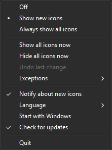

TrayReveal
A tiny tray app for Windows 11 that keeps your notification area icons visible.
Windows 11 hides every new tray icon behind the ^ overflow menu and no longer offers the old "Always show all icons" checkbox. TrayReveal brings that convenience back: it watches the icon list of the current user and shows new icons right away – or all of them, if you prefer.
Installation
Download one of the files from Releases:
- Installer
TrayReveal-<version>-windows-x64-setup.exe– installs for the current user (default, no administrator rights) or for all users, adds a Start menu entry and optionally starts TrayReveal with Windows. It can be removed under Settings → Apps. - Portable
TrayReveal-<version>-windows-x64.zip– extract it to any folder and startTrayReveal.exe. Keep thelangfolder next to the program.
The program is not signed, so SmartScreen may warn on the first start: "More info" → "Run anyway". Each file has a .sha256 file to verify the download, and the release notes link a VirusTotal scan.
The installer accepts the usual Inno Setup parameters, e.g. for a silent installation:
| Parameter | Effect |
|---|---|
/CURRENTUSER | Install for the current user only (default) |
/ALLUSERS | Install for all users (asks for administrator rights) |
/DIR="C:\Path" | Installation folder |
/SILENT, /VERYSILENT | Without wizard (with or without progress window) |
/SUPPRESSMSGBOXES | No message boxes in silent mode |
/TASKS="autostart,desktopicon" | Selected options; autostart starts TrayReveal with Windows for the installing user, desktopicon adds a desktop shortcut. Without the parameter, autostart is on and the desktop shortcut off |
/NOICONS | No Start menu entry |
/LOG="C:\Path\setup.log" | Write a log file |
Example: TrayReveal-1.1.0-windows-x64-setup.exe /VERYSILENT /SUPPRESSMSGBOXES /ALLUSERS /TASKS="autostart"
Settings such as the mode or the language are stored per user and are not set by the installer. Uninstalling removes the program and the autostart entry but keeps the settings in HKCU\Software\TrayReveal.
Usage
Start TrayReveal.exe. On the first start it only remembers the icons that already exist and changes nothing. Right-click (or left-click) its tray icon for the menu:

- Off – watch only, change nothing
- Show new icons (default) – every new icon is shown once; if you hide it later in the Windows Settings, it stays hidden
- Always show all icons – keeps every icon visible, except the exceptions
- Show all icons now / Hide all icons now – one-time actions; hiding is not available while all icons are always shown
- Exceptions – lists the apps with their icons; apps marked with a red cross always stay hidden, clicking them again shows them again (except in Off mode)
- Undo last change – reverts the last action from the menu (mode, show/hide all, exceptions) while TrayReveal is running
- Check for updates – checks once a day whether a new version exists and announces it with a notification and the menu item Download version …
- Notify about new icons, Language, Start with Windows, Quit
The menu follows the light or dark mode of the taskbar.
When an app updates into a new versioned folder (for example app-1.2.3 or a Microsoft Store package), Windows creates a new hidden entry for it. TrayReveal recognizes the same app and keeps your previous choice. Exceptions apply to all versions of an app. If several older versions exist, the one changed last counts.
Entries whose program has been missing for three days in a row are removed from the Windows tray settings, so old versions do not pile up. In Off mode nothing is removed.
TrayReveal.exe --once applies the current settings once without a tray icon and exits, e.g. for the Task Scheduler.
Languages
TrayReveal comes in 51 languages, including German dialects and a few fun languages; LANGUAGES.md lists all codes. With Automatic, it follows the Windows display language and falls back to English.
The translations were generated by Claude (AI). Most of them have not been checked by a native speaker yet; LANGUAGES.md and the header of each file show which ones have. If you notice a mistake or know a better wording, please open an issue or a pull request. Reviewers are credited with their GitHub name in the language file and in LANGUAGES.md, if they agree.
The texts are plain text files named after the language code, e.g. de.lang or pt-BR.lang, with one key = text per line. To add a language, copy lang/en.lang, translate the texts after the = and keep the keys and placeholders such as {name}. Missing texts are taken from the fallback language (language.fallback), otherwise from English.
Language files are read from the lang folder next to the program and from %APPDATA%\TrayReveal\lang. The second folder needs no administrator rights and its texts take priority, so you can add a language or change single texts there.
How it works
Windows stores the visibility of each tray icon per user under HKCU\Control Panel\NotifyIconSettings, one subkey per icon. The value IsPromoted decides whether the icon is shown on the taskbar (1) or hidden in the overflow menu (0); for icons that were never shown, the value is missing.
TrayReveal waits for changes to this key (no polling), sets or creates IsPromoted according to the chosen mode and leaves everything else untouched. It is the same value the Windows Settings toggle writes, so you can still change single icons there.
- Runs as a standard user, no administrator rights, writes only to
HKCU - No window, only a tray icon with a context menu
- The only network access is the optional update check: shortly after the start and then once a day, TrayReveal requests the information about the latest release from
api.github.com. It only downloads this information; nothing about your system or your icons is sent or uploaded, and GitHub only sees the usual request data such as the IP address and the program name with version (TrayReveal/<version>). It can be turned off with Check for updates in the menu. Updates are never downloaded or installed automatically, the menu only links to the release page. - No telemetry
- Settings are stored in the registry under
HKCU\Software\TrayReveal
The registry key is not documented by Microsoft and may change with future Windows updates. If its layout changes, TrayReveal does nothing instead of guessing.
License
MIT – not affiliated with or endorsed by Microsoft. Windows is a trademark of the Microsoft group of companies.